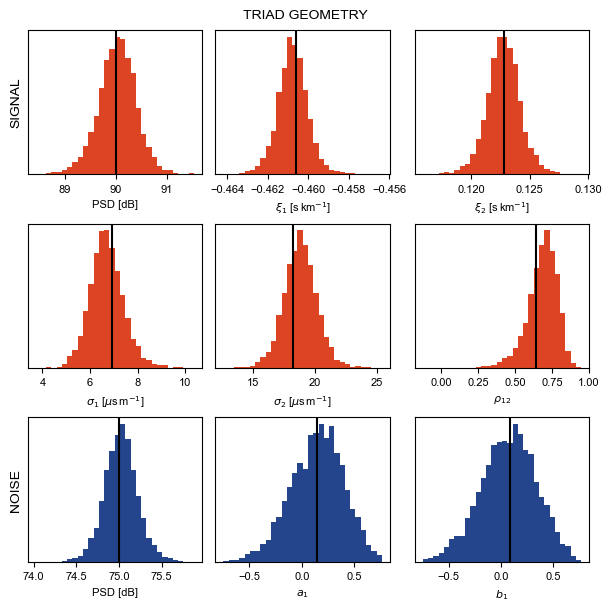

Example notebook copy#
[ ]:
#________ IMPORT ________#
#__ Topophone2 __
from topophone2.modelling import ArrayCovarianceModel
from topophone2.inversion import Uniform, Posterior, LinearFlowsModel, VI
#__ Numerical __
import numpy as np
import scipy.stats as stats
import harmonic as hm
#__ Plotting __
import matplotlib.pyplot as plt
import matplotlib.tri as tri
import matplotlib.ticker as ticker
from matplotlib.gridspec import GridSpec
from matplotlib.lines import Line2D
from mpl_toolkits.axes_grid1.inset_locator import inset_axes
import cmcrameri.cm as cmc
theme = ['#DC4424', '#74A466', '#24448C', '#F8BC5C']
small, large = 8, 10
plt.rcParams["font.sans-serif"] = ['Arial']
#__ Print statement __
print("Imported modules.")
[16]:
#________ READ SIMULATION ________#
#__ Import HDF5 reader __
import h5py
#__ Open file __
with h5py.File('../testing/abyssal_T-phase_sim.h5', 'r') as hf:
#__ Wavefield __
slowness_T = hf['sim_output/slowness_T'][:] # (sensor, source, mode, direction) [s.m-1]
energy_T = hf['sim_output/energy_T'][:] # (sensor, source, mode) [uPa2.Hz-1]
slowness_J = hf['sim_output/slowness_J'][:] # (source, direction) [s.m-1]
energy_J = hf['sim_output/energy_J'][:] # (source) [uPa2.Hz-1]
#__ Truth __
m_true_T = hf['sim_output/m_true_T'][:] # (sensor, parameter)
a_true = hf['sim_output/a'][:] # (order)
b_true = hf['sim_output/b'][:] # (order)
#__ Geometry __
xR = hf['geom/xR'][:] # (sensor, direction) [m]
az = hf['geom/azS_J'][:] # (source) [rad]
f = hf['geom'].attrs['f'] # [Hz]
s0 = hf['geom'].attrs['s0'] # [s.m-1]
#__ Print statement __
print("Loaded simulation.")
Loaded simulation.
[17]:
#________ SET UP INVERSIONS ________#
#__ Sensor geometries __
x_triad = xR[1:] # Sensor position (triad) [m] (sensor, direction)
x_quad = xR # Sensor position (full) [m] (sensor, direction)
#__ Frequency vector __
bw = 1/3 # Frequency vector bandwidth [8ve]
nf = 5 # Number of frequency bins
f_vec = f * 2.0**(np.linspace(-1,1,nf)*bw/2) # Frequency vector [Hz] (frequency)
freq = 2 * np.pi * f_vec # Frequency vector [rad.s-1] (frequency)
#__ Example data __
r_triad = x_triad[None,:,:] - x_triad[:,None,:] # Sensor separation (triad) [m] (sensor, sensor, direction)
r_quad = x_quad[None,:,:] - x_quad[:,None,:] # Sensor separation (full) [m] (sensor, sensor, direction)
Gamma_T_triad = np.einsum( # Signal array covariance (triad) (frequency, sensor, sensor)
'pq,fpqjk->fjk',
np.nan_to_num(energy_T[0], nan=0.0),
np.exp(1j * np.einsum('f,jkl,pql->fpqjk', freq, r_triad, np.nan_to_num(slowness_T[0], nan=0.0)))
)
Gamma_T_quad = np.einsum( # Signal array covariance (full) (frequency, sensor, sensor)
'pq,fpqjk->fjk',
np.nan_to_num(energy_T[0], nan=0.0),
np.exp(1j * np.einsum('f,jkl,pql->fpqjk', freq, r_quad, np.nan_to_num(slowness_T[0], nan=0.0)))
)
Gamma_J_triad = np.einsum( # Noise array covariance (triad) (frequency, sensor, sensor)
'p,fpjk->fjk',
energy_J,
np.exp(1j * np.einsum('f,jkl,pl->fpjk', freq, r_triad, slowness_J))
)
Gamma_J_quad = np.einsum( # Noise array covariance (full) (frequency, sensor, sensor)
'p,fpjk->fjk',
energy_J,
np.exp(1j * np.einsum('f,jkl,pl->fpjk', freq, r_quad, slowness_J))
)
Gamma_TJ_triad = Gamma_T_triad + Gamma_J_triad # Array covariance (full) (frequency, sensor, sensor)
Gamma_TJ_quad = Gamma_T_quad + Gamma_J_quad # Array covariance (full) (frequency, sensor, sensor)
#__ Inversion parameters __
sigs = ['normal', {'sig':'noise2D', 's':s0, 'max_order':1}]
lower = np.array([50., -5.0e-4, 8.0e-5, 1.0e-6, 1.0e-6, -0.99, 50., -0.8, -0.8])
upper = np.array([100., -4.2e-4, 1.6e-4, 5.0e-5, 5.0e-5, 0.99, 100., 0.8, 0.8])
N_flow = 8
learning_rate = 5e-4
iterations = 30000
nsample = 100
nout = int(iterations/5000)
N_samples = 5000
#__ Number of observations __
Nobs_T = 16
Nobs_J = 32
#__ Truth vector for signal __
m_true = np.append(m_true_T[0], np.array([75., a_true[1], b_true[1]]))
#__ Print statement __
print("Set up inversion.")
Set up inversion.
[18]:
#________ INVERSION HELPER ________#
#__ Helper __
def decompose(
Gamma : np.ndarray=None,
Gamma_n : np.ndarray = None,
Nobs : int=None,
Nobs_n : int = None,
x : np.ndarray=None,
freq : np.ndarray=None,
sigs : list=None,
weight_units : str = 'dB',
custom_cf : dict = {},
prior_bounds : tuple=None,
N_flow : int=None,
mean_field : bool = False,
ini_dist : str = 'Uniform',
learning_rate : float=None,
outpath : str = '.',
iterations : int=None,
nsample : int=None,
nout : int = 1,
save_intermediate_result : bool = False,
verbose : bool = False,
N_samples : int=None,
model_outpath : str = None,
loss_outpath : str = None,
unpack : bool = False,
return_loss : bool = False
) -> np.ndarray:
r'''
`Gamma` : `numpy.ndarray`
Observed array-covariance matrix
(frequency, sensor, sensor)
`Gamma_n` : `numpy.ndarray`
Observed noise-only array-covariance matrix
(frequency, sensor, sensor)
`Nobs` : `int`
Degrees of freedom
`Nobs_n` : `int`
Degrees of freedom (noise)
`x` : `numpy.ndarray`
Sensor position [m]
(sensor, direction)
`freq` : `numpy.ndarray`
Angular frequency vector [rad.s-1]
(frequency)
`sigs` : `list`
List of signals
`weight_units` : `str`
Units of the signal weights in the model vector
('dB' or 'linear')
`custom_cf` : `dict`
Custom characteristic functions keyed by signal name
`prior_bounds` : `(numpy.ndarray,numpy.ndarray)`
Prior bounds
`N_flow` : `int`
Number of normalising flows
`mean_field` : `bool`
Use mean-field approximation
`ini_dist` : `str`
Initial distribution to transform
`learning_rate` : `float`
`outpath` : `str`
'''
#__ Set up array-covariance model __
if (Gamma_n is not None) : calc_noise_only = True
else: calc_noise_only = False
model = ArrayCovarianceModel(
x = x,
freq = freq,
signal_types = sigs,
weight_units = weight_units,
calc_noise_only = calc_noise_only,
custom_cf = custom_cf
)
#__ Set up prior pdf __
prior = Uniform(*prior_bounds)
#__ Set up posterior pdf __
posterior = Posterior(
Gamma_obs = Gamma,
N_obs = Nobs,
arraycovariance_model = model,
prior = prior,
Gamma_obs_noise = Gamma_n,
N_obs_noise = Nobs_n
)
#__ Set up normalising flow model __
flow = LinearFlowsModel(
N_param = len(prior_bounds[0]),
prior_bounds = prior_bounds,
N_flow = N_flow,
mean_field = mean_field,
ini_dist = ini_dist
)
#__ Set up inverse problem __
inverse = VI(
flow_model = flow,
posterior = posterior,
learning_rate = learning_rate,
outpath = outpath
)
#__ Perform inversion __
inverse.invert(
iterations = iterations,
nsample = nsample,
nout = nout,
save_intermediate_result = save_intermediate_result,
verbose = verbose
)
loss = inverse.loss_his
#__ Sample posterior __
m = inverse.sample(N_samples=N_samples)
#__ Save models __
if model_outpath: np.savetxt(model_outpath, m)
if loss_outpath : np.savetxt(loss_outpath, loss)
#__ Unpack __
if unpack: m = inverse.unpack(m)
#__ Return output __
if return_loss: return m, loss
else: return m, posterior
#__ Print statement __
print("Defined inversion helper function.")
Defined inversion helper function.
[19]:
#__ Triad inversion __
m_triad, post_triad = decompose(
Gamma = Gamma_TJ_triad,
Nobs = Nobs_T,
Gamma_n = Gamma_J_triad,
Nobs_n = Nobs_J,
x = x_triad,
freq = freq,
sigs = sigs,
prior_bounds = (lower,upper),
N_flow = N_flow,
learning_rate = learning_rate,
iterations = iterations,
nsample = nsample,
nout = nout,
verbose = True,
N_samples = N_samples
)
----------------------------------------
Iteration: 0, Loss: 47972.93
The elapsed time is: 0.21 s
Iteration: 5000, Loss: 13919.05
The elapsed time is: 64.29 s
Iteration: 10000, Loss: 13851.10
The elapsed time is: 128.17 s
Iteration: 15000, Loss: 13849.36
The elapsed time is: 191.35 s
Iteration: 20000, Loss: 13849.47
The elapsed time is: 251.97 s
Iteration: 25000, Loss: 13849.41
The elapsed time is: 311.99 s
Iteration: 30000, Loss: 13849.40
The elapsed time is: 371.99 s
----------------------------------------
Finish training!
[20]:
#________ PLOT HISTOGRAMS ________#
#__ Create figure and axes __
fig, axs = plt.subplots(
nrows=3, ncols=3,
figsize=(6,6), facecolor='white', layout='constrained'
)
#__ Set labels and scales __
labels = [
r"PSD [dB]", r"$\xi_1$ [s$\,$km$^{-1}$]", r"$\xi_2$ [s$\,$km$^{-1}$]",
r"$\sigma_1$ [$\mu$s$\,$m$^{-1}$]", r"$\sigma_2$ [$\mu$s$\,$m$^{-1}$]", r"$\rho_{12}$",
r"PSD [dB]", r"$a_1$", r"$b_1$"
]
scales = [
1e0, 1e3, 1e3,
1e6, 1e6, 1e0,
1e0, 1e0, 1e0
]
#__ Format __
fig.suptitle('TRIAD GEOMETRY', fontsize=large)
axs[0,0].set_ylabel('SIGNAL', fontsize=large)
axs[2,0].set_ylabel('NOISE', fontsize=large)
for ax, lab in zip(axs.flatten(), labels):
ax.set_xlabel(lab, fontsize=small)
ax.set_yticks([])
ax.tick_params(labelsize=small)
#__ Plot histograms __
for i, (ax, sc) in enumerate(zip(axs.flatten(), scales)):
if (i < 6): c = theme[0]
else: c = theme[2]
ax.hist(sc*m_triad[:,i], bins=30, color=c, zorder=1)
ax.axvline(sc*m_true[i], color='k', zorder=2)
#__ Show figure __
fig.show()

[21]:
#________ COMPUTE EVIDENCE ________#
#__ Helper function __
def calc_evidence(m, lnL, lnV, nchains=10, temperature=0.8):
#__ Reshape __
ndim = m.shape[-1]
m = m.reshape(nchains, -1, ndim)
lnprob = (lnL - lnV).reshape(nchains, -1)
chains = hm.Chains(ndim)
chains.add_chains_3d(m, lnprob)
chains_train, chains_infer = hm.utils.split_data(chains, training_proportion=0.5)
model = hm.model.RQSplineModel(ndim, standardize=True, temperature=temperature)
model.fit(chains_train.samples)
ev = hm.Evidence(chains_infer.nchains, model)
ev.add_chains(chains_infer)
ln_Z, _ = ev.compute_ln_evidence()
err_lo, err_hi = ev.compute_ln_inv_evidence_errors()
return ln_Z, (err_lo, err_hi)
# #__ Calculate likelihood __
lnL_triad, _ = post_triad.log_likelihood(m_triad, grad=False)
# #__ Calculate prior volume __
lnV_triad = np.sum(np.log(upper-lower))
#__ Calculate the evidence __
ln_Z_triad, err_triad = calc_evidence(m_triad, lnL_triad, lnV_triad)
[22]:
ln_Z_triad
[22]:
np.float32(-13850.525)